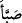

göre ise onlara Yahûdî denilmesi şundandır: Onlar kendilerine bir nebî veya peygamber
geldiğinde onu krallarına gösterir ve öldürürlerdi.
Îsâ (a.s.)’a yardım ettikleri veya Nâsıra isimli bir köyde Îsâ (a.s.) ile beraber
bulundukları için Hıristiyanlara “Nasârâ” denilmiştir. Veyâhud Îsâ’nın geldiği
“Nasra” denilen bir köyde onu tasdik ettikleri için bu ismi almışlardır.
“Sâbiîn”; dinden çıktı mânâsına gelen ( __WORD__ ) fiilinden türetilmiştir. Bunlar;
hıristiyanlık ve yahûdîlikten çıkarak yıldızlara ve meleklere ibâdet etmeye başlayan bir
topluluktur. Her ne kadar Zebûr’u okuyorlarsa da “putperest”ler gibi olduklarından
kestikleri yenmez, kadınları ile evlenilmez.
Bedevînin birisi Peygamberimiz’e, onlara “Sâbiî” denilmesinin sebebini sormuş ve
şu cevâbı almıştır: “Zira onlar kendilerine bir rasûl veya nebî geldiğinde onu alır,
büyük bir kazana kor ve kaynatırlar dağılıp dökülene kadar başına kızgın su
dökerlerdi.” Ravzatü’l-ulemâ’da böyle anlatılmaktadır.
Kâfirlerden; Allah’a ve bütün peygamberlere indirilenlere, yeniden diriltileceğimiz
güne, mebde’ ve maâde lâyıkı vechile hâlis bir îmânla îmân edip, gerçekten İslâm
milletine girenlere ve Allah’ın râzı olduğu işleri yapanlara, yaptıklarına karşılık,
ecirleri Rablerinin katındadır. O Rab, onların işlerinin mâliki, onları lâyık oldukları
makama erdirendir.
“O kimselere haber ver ki, eğer îmân edip sâlih ameller işlerlerse daha önce
yaptıklarından ve atalarının günahlarından dolayı hesâba çekilmeyecekler, işledikleri
sevâblar da eksiltilmeyecektir” Kâfirlerin azâbdan korktuğu o gün, onlar
korkmayacaklardır. Yine ömürlerini zâyi edenlerin, güzel amelleri kaçıranların
üzüldüğü o gün tavsîf edilen kimseler üzülmeyeceklerdir. Bu beyânlardan maksad,
özetle ihlâsla îmân edip sâlih amel işleyenlerin devamlı olarak korku ve üzüntüden
emin olacakları ve cennete gireceklerini bildirmektir.
Bil ki, hak din olan İslâm’ın güzelliği bütün gönüllerde mevcûddur. Ondan yüz
çevirenler, ancak beşerî âfetlere yenilenler ve başkalarını taklîd edenlerdir. Zira
dünyaya gelen her çocuk, yaratılışında selîm bir fıtratla İslâm’ı kabûle hazır olarak
doğar. Şayet bu çocuk, aslî fıtratı üzerine bırakılsa, İslâm’a sarılmaya devam eder.
Ondan hiç ayrılmaz. Nitekim Peygamber Efendimiz: “Her doğan, İslâm fıtratı üzerine
doğar. Sonra ana ve babası Yahûdî, Hıristiyan ve Mecûsî yapar”[304] buyurmuştur.
Şerhu’l-meşârik adlı eserinde İbnü’l-Melek, selîm fıtrattan murâd, Allah’ın “Ben
sizin Rabbiniz değilmiyim?” sorusuna rûhların “evet” diye cevaplamalarıdır, demiştir.
Bu hadîsle, “Hızır (a.s.)’ın öldürdüğü çocuk, tabîatı itibariyle kâfirdir”[305] hadîsi
arasında bir çelişki yoktur. Bu konunun gerçeği şudur: Allah Teâlâ, Âdem’in belinden
zürriyetini çıkardığında onlara: “Ben sizin Rabbiniz değil miyim” buyurmuştu. Hakk
Teâlâ’yı gözleriyle müşâhede ettiklerinden rûhların tümü o anda îmân etmiştir. Ne var ki
daha önce îmân etmemiş olanların îmânları fayda vermemiştir. O saîd ve şakî olanlar,
birbirlerinden ayrılmamıştı. Anne karnına inince cehennemlik ve cennetlikler ayrılır.